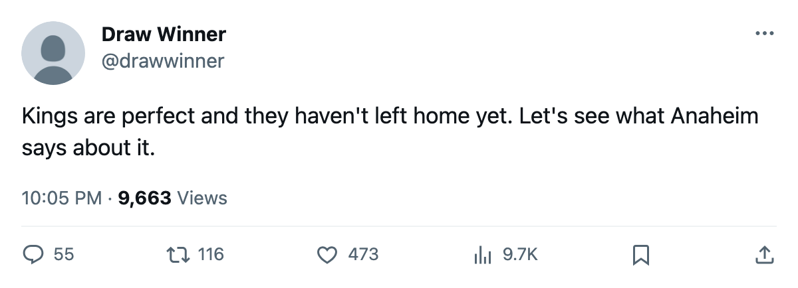

Los Angeles Have Not Lost, and Have Not Left Home; Anaheim Is the First Test
The Kings have 4 points from 2 games at home and play their first road game tonight.
 Ray CallumSenior correspondent · Home Ice Network
Ray CallumSenior correspondent · Home Ice Network
 Los Angeles Kings have 4 points from 2 games, all at home, and play their first road game of the season tonight at
Los Angeles Kings have 4 points from 2 games, all at home, and play their first road game of the season tonight at  Mighty Ducks of Anaheim.
Mighty Ducks of Anaheim.
Los Angeles Kings are 2-0-0 with 6 goals for and 4 against, on a two-game win streak, and the 4 points come from 1 win and 1 overtime win.  Dallas Stars hold the same 4 points in the Pacific, from 3 games.
Dallas Stars hold the same 4 points in the Pacific, from 3 games.
 Roman Cechmanek90 has started both games for the Kings.
Roman Cechmanek90 has started both games for the Kings.  Jean-Sebastien Giguere93, last season's Vezina winner, has started all 3 for Anaheim.
Jean-Sebastien Giguere93, last season's Vezina winner, has started all 3 for Anaheim.

Mighty Ducks of Anaheim sit 1-2-0 with 2 points, 6 goals for and 7 against, and a loss in their only home game. The 1 win came on the road, where the club is 1-1.
| club | gp | w | otw | l | otl | pts | gf | ga | |
|---|---|---|---|---|---|---|---|---|---|
| Dallas Stars | 3 | 2 | 0 | 1 | 0 | 4 | 7 | 6 | |
| Los Angeles Kings | 2 | 1 | 1 | 0 | 0 | 4 | 6 | 4 | |
 San Jose Sharks San Jose Sharks | 2 | 1 | 0 | 0 | 1 | 3 | 5 | 5 | |
| Mighty Ducks of Anaheim | 3 | 1 | 0 | 2 | 0 | 2 | 6 | 7 | |
 Phoenix Coyotes Phoenix Coyotes | 3 | 0 | 0 | 3 | 0 | 0 | 0 | 4 | 7 |
Tonight is the first meeting of the season between the Kings and Anaheim.  Atlanta Thrashers visit
Atlanta Thrashers visit  Pittsburgh Penguins, and
Pittsburgh Penguins, and  Boston Bruins visit
Boston Bruins visit  Vancouver Canucks, in the night's other games, both first meetings too.
Vancouver Canucks, in the night's other games, both first meetings too.
Los Angeles Kings stay home after tonight, against  Colorado Avalanche on 2005-10-17.
Colorado Avalanche on 2005-10-17.
